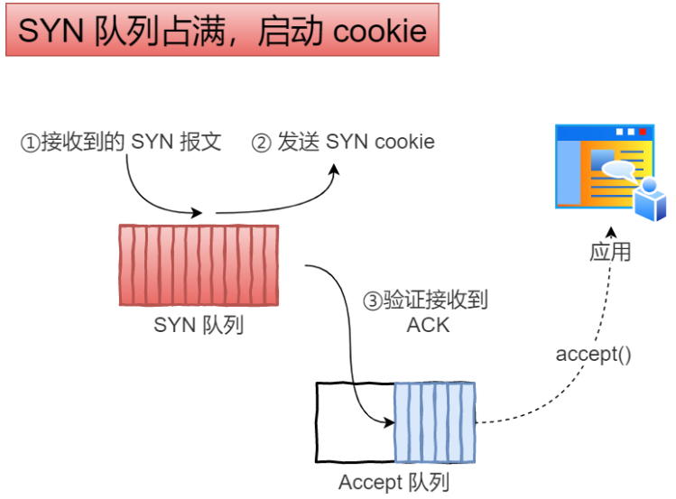

TCP&UDP
TCP 是面向连接的、可靠的、基于字节流的传输层通信协议。UDP 是一个简单的面向数据报的传输层通信协议。
TCP 和 UDP 区别？
- 最大的区别就是「
连接」vs「无连接」，TCP 面向连接，UDP 不建立连接。 - 服务对象。TCP 是一对一的两点服务，UDP 支持一对一、一对多、多对多的交互通信。
- 可靠性。TCP 是可靠的，数据可以无差错、不丢失、不重复。UDP 不可靠，发送之后就不管了，不保证能否安全送达。
- TCP 有拥塞控制、流量控制保证数据传输的安全性，UDP 则没有。
- 传输方式。TCP 是字节流，UDP 是数据报。
用一句话简单的概括就是：TCP 面向连接，可靠的字节流服务。提供超时重发、流量控制、拥塞控制等功能。UDP 不建立连接，不可靠，只是把数据包发给对应的ip地址，不能保证是否安全送达。
TCP 和 UDP 应用场景？
TCP 稳定可靠，适应场景：传送文件，发送邮件，浏览网页，UDP 速度快，但可能产生丢包，所以适用于对实时性要求较高，但对少量丢包没有太大要求的场景，比如域名查询，语音通话，视频直播
TCP 报文格式
TCP 报文头为 20 个字节。
序列号：在建立连接时由计算机生成的随机数作为其初始值，通过 SYN 包传给接收端主机，每发送一次数据，就「累加」一次该「数据字节数」的大小。用来解决网络包乱序问题。
确认应答号：指下一次「期望」收到的数据的序列号，即当前收到的序列号 + 1。发送端收到这个确认应答以后可以认为在这个序号以前的数据都已经被正常接收。用来解决不丢包的问题。
控制位：
- ACK：该位为 1 时，「确认应答」的字段变为有效，TCP 协议规定，除了最初建立连接时的 SYN 包之外该位必须设置为 1。
- RST：该位为 1 时，表示 TCP 连接中出现异常必须强制断开连接。
- SYN：在连接建立时用来同步序号，当 SYN = 1 而 ACK = 0时，表示这是一个连接请求报文。若服务器端同意建立连接，则在响应报文中使 SYN = 1，ACK = 1。
- FIN：该位为 1 时，表示今后不会再有数据发送，希望断开连接。当通信结束希望断开连接时，通信双方的主机之间就可以相互交换 FIN 位为 1 的 TCP 段。
顺便也讲下 UDP 的报文头部，见下图，比较简单，8 个字节。
三次握手
描述三次握手过程。
- 第一次握手 Client 发送
SYN报文给 Server，序列号是随机生成的x，请求建立连接。 - 第二次握手 Server 发送
SYN + ACK报文给 Client，序列号是随机生成的y，确认序列号是当前收到的序列号 + 1，即x + 1，表示我收到了你的请求，并且我也请求建立连接。 - 第三次握手 Client 发送
ACK报文给 Server，序列号x + 1，确认序列号y + 1，此时 TCP 连接就建立了。
提一点就是，第三次握手是可以携带应用层数据的，前两次握手不行。
为什么是三次握手？不能两次握手？
目的是为了在不可靠的信道上建立可靠的连接，怎么理解这句话呢，举三个方面的例子：
- 防止历史连接初始化造成混乱。因为 TCP 协议的报文并不是按顺序到达的，比如网络拥堵了，客户端发了 2 次 SYN 包，如果是旧的 SYN 包先到达了，那服务端回的 ack 序号就有问题了，跟客户端最新的 syn 包序号对不上，所以客户端会 RST 断开这次连接。如果新的 SYN 包先到达，先建立连接了，旧的 SYN 包才到达，这样也有问题，服务端认为是两次连接，客户端觉得是同一个连接。所以三次握手是必须的。
- 双方同步初始序列号。通过第二次握手，同步了序列号，所以客户端知道服务端成功接收了它的数据包。同理也需要第三次握手，也需要同步序列号，让服务端知道客户端成功接收了它的数据包。
- 防止伪造，验证源 IP。如果有网络攻击，不断伪造 IP 向服务器发送请求连接，如果服务器不想被占用资源就需要通过第三次握手的内容鉴定。
IP 层会分片，为什么 TCP 层还需要 MSS？
我们先来认识 MTU 和 MSS。
MTU：一个网络包的最大长度，以太网中一般为1500字节；MSS：除去 IP 和 TCP 头部之后，一个网络包所能容纳的 TCP 数据的最大长度；
如果在 TCP 的整个报文（头部 + 数据）交给 IP 层进行分片，会有什么异常呢？
当 IP 层有超过一个 MTU 大小的数据（TCP 头部 + TCP 数据）要发送，那么 IP 层就要进行分片，把数据分片成若干片，保证每一个分片都小于 MTU 。把一份 IP 数据报进行分片以后，由目标主机的 IP 层来进行重新组装后，再交给上一层 TCP 传输层。
这样看起来井然有序，但这存在隐患的，如果当一个 IP 分片丢失，整个 IP 报文的所有分片都得重传。
因为 IP 层本身没有超时重传机制，它由传输层的 TCP 来负责超时和重传。
当接收方发现 TCP 报文（头部 + 数据）的某一片丢失后，则不会响应 ACK 给对方，那么发送方的 TCP 在超时后，就会重发「整个 TCP 报文（头部 + 数据）」。
因此，可以得知由 IP 层进行分片传输，是非常没有效率的。
所以，为了达到最佳的传输效能 TCP 协议在建立连接的时候通常要协商双方的 MSS 值，当 TCP 层发现数据超过 MSS 时，则就先会进行分片，当然由它形成的 IP 包的长度也就不会大于 MTU，自然也就不用 IP 分片了。
经过 TCP 层分片后，如果一个 TCP 分片丢失后，进行重发时也是以 MSS 为单位，而不用重传所有的分片，大大增加了重传的效率。
什么是 SYN 攻击？如何避免 SYN 攻击?
SYN 攻击
我们否知道 TCP 连接建立是需要三次握手，假设攻击者短时间伪造不同的 IP 地址的 SYN 报文，服务端每接收到一个 SYN 报文，就进入 SYN_RCVD 状态，但是服务端发送出去的 ACK + SYN 报文，无法得到未知 IP 主机的 ACK 应答，久而久之就会占满服务端的未完成连接队列，使得服务器不能为正常用户服务。
我们再来了解下握手协议中的相关概念
未完成连接队列和已完成连接队列
服务端对于一个调用 listen 进行监听的套接字，操作系统会给这个套接字维护两个队列。
1.未完成连接队列
当客户端发送 TCP 三次握手的第一次握手「SYN」给服务器端时，服务器端就会在未完成队列中创建一个跟这个「SYN」对应的一项。我们可以把当前状态看成是半连接状态，此时服务端从 LISTEN 状态变成 SYN-RCVD 状态，同时给客户端回复第二次握手「SYN + ACK」，然后服务器等待第三次握手。
2.已完成连接队列
当第三次握手完成后，这个连接就变成了已建立状态 ESTABLISHED，每个已经完成三次握手的客户端都放在这个队列中。
backlog 参数
上面两个队列和的最大值，当这两个队列和超出 backlog 时，再有一个客户端发 SYN 请求，服务端不会给出响应。
SYN-ACK 重传次数
服务器发送完SYN－ACK包，如果未收到客户确认包，服务器进行首次重传，等待一段时间仍未收到客户确认包，进行第二次重传，如果重传次数超过系统规定的最大重传次数，系统将该连接信息从半连接队列中删除。注意，每次重传等待的时间不一定相同。
半连接存活时间
是指半连接队列的条目存活的最长时间，也即服务从收到SYN包到确认这个报文无效的最长时间，该时间值是所有重传请求包的最长等待时间总和。有时我们也称半连接存活时间为Timeout时间、SYN_RECV存活时间。
SYN 攻击防范技术
增加最大半连接数
缩短超时时间
SYN cookies 技术
当「 SYN 队列」满之后，后续服务器收到 SYN 包，不进入「 SYN 队列」，
计算出一个
cookie值，再以 SYN + ACK 中的「序列号」返回客户端，服务端接收到客户端的应答报文时，服务器会检查这个 ACK 包的合法性。如果合法，直接放入到「 Accept 队列」。
最后应用通过调用
accpet()socket 接口，从「Accept 队列」取出的连接。
四次挥手

描述四次挥手过程。
- 第一次挥手：客户端（也可以是服务端主动请求断开连接）发出 FIN 报文，请求断开连接。
- 第二次挥手：服务器端发出 ACK 报文，表示收到断开请求。但是此时服务器端数据没发完，可以继续发生数据。（这时客户端进入 FIN_WAIT 状态）
- 第三次挥手：服务器端数据发生完成，则向客户端发送 FIN + ACK 报文。意思是可以关闭连接了。
- 第四次挥手：客户端发送 ACK 报文，然后进入 TIME_WAIT 状态。（服务器端收到 ACK 后断开连接，客户端发送 ACK 后 2mls 时间后断开连接）
注：网上有些图第一次挥手是 FIN + ACK 包，里面的 ACK 是响应上一个包的 ACK 包。
为什么挥手需要四次？
因为握手的时候没有数据，客户端发送 SYN 包后，服务端可以立刻回复 SYN + ACK 包，而挥手的时候，当服务端收到 FIN 断开连接请求的时候，只能先回复一个 ACK 包，等服务端数据发完了才接着发 FIN + ACK 包，故需要四次挥手。
为什么需要 TIME_WAIT 状态？
为了保证对方已经收到了 ACK 包，如果提前关闭的话，一旦 ACK包丢失，另一方没有收到 ACK 包，会一直停留在最后确认的状态，然后重发 FIN 包。所以要等在 2MLS 时间就是如果服务器端没有收到 ACK 包，服务器端重发 FIN 包并到达客户端的时间。（最后一个ACK包存活期 1MLS，重发 FIN 包存活期 1MLS。加起来 2MLS。）
TIME_WAIT 优化
TIME_WAIT 过多会导致端口资源被占用，因为端口就65536个，被占满就会导致无法创建新的连接。一般通过设置 SO_REUSEADDR 端口重复用，断开连接后可以马上使用。
TCP 的 11 种状态
通过上面三次握手、四次挥手图片，就可以找到 10 种状态了，还有一种 CLOSING 状态，产生的原因是客户端，服务端同时关闭（发送 FIN 包）。